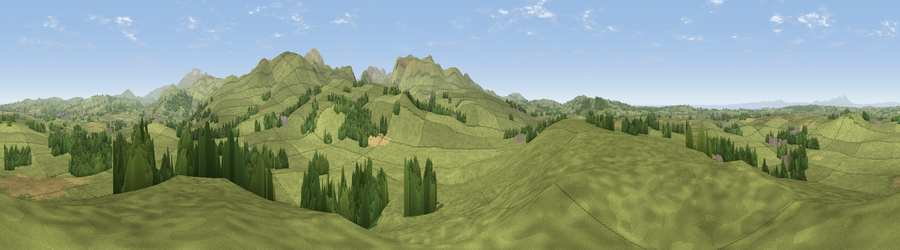

Pardshaw Crag
#7455 in England · top 49% of its area beats it · near PardshawThe view, rendered

A 360° render of this exact spot computed from the terrain model, tree cover and land cover — summer colours, afternoon light, calibrated against photographs of famous viewpoints. Real trees, hedges and buildings will differ in detail.
The panorama
Grey silhouette: terrain skyline in each direction (720 bearings, Earth curvature and refraction included). Dashed green: skyline with trees (+15 m) and buildings (+8 m) as obstacles. Blue strip: how far the ground is visible on each bearing.
Where the view opens
Wedge length = distance to the farthest visible ground on that bearing (vegetation-aware). Rings at 10, 25 and 50 km.
What fills the view
88% grassland · 7% woodland · 3% cropland ·
Angular shares of the visible panorama (visual magnitude), not map area. Landscape diversity 0.21 (0–1 Shannon).
Key numbers
More beautiful places nearby
The staircase of upgrades: each row has a higher view potential than everything closer. Driving times are estimates from straight-line distance, calibrated against real road routing — check an actual route before setting out.
| Place | Direction | Drive | Score |
|---|---|---|---|
| Mockerkin How | S · 3 km | ~7 min | 72.4 |
| Whin Fell | E · 3 km | ~8 min | 76.9 |
| Viewpoint near Loweswater | SE · 4 km | ~9 min | 83.1 |
| Viewpoint near Loweswater | SSE · 5 km | ~12 min | 85.5 |
| Blake Fell | S · 6 km | ~13 min | 86.9 |
| Crag Fell | S · 11 km | ~21 min | 89.1 |
| Ullock Pike | ENE · 14 km | ~26 min | 89.4 |
| Long Side | ENE · 15 km | ~27 min | 89.5 |
54.61776, -3.39176 · source: osm peak · position refined by local search. Computed location — check access rights before visiting.